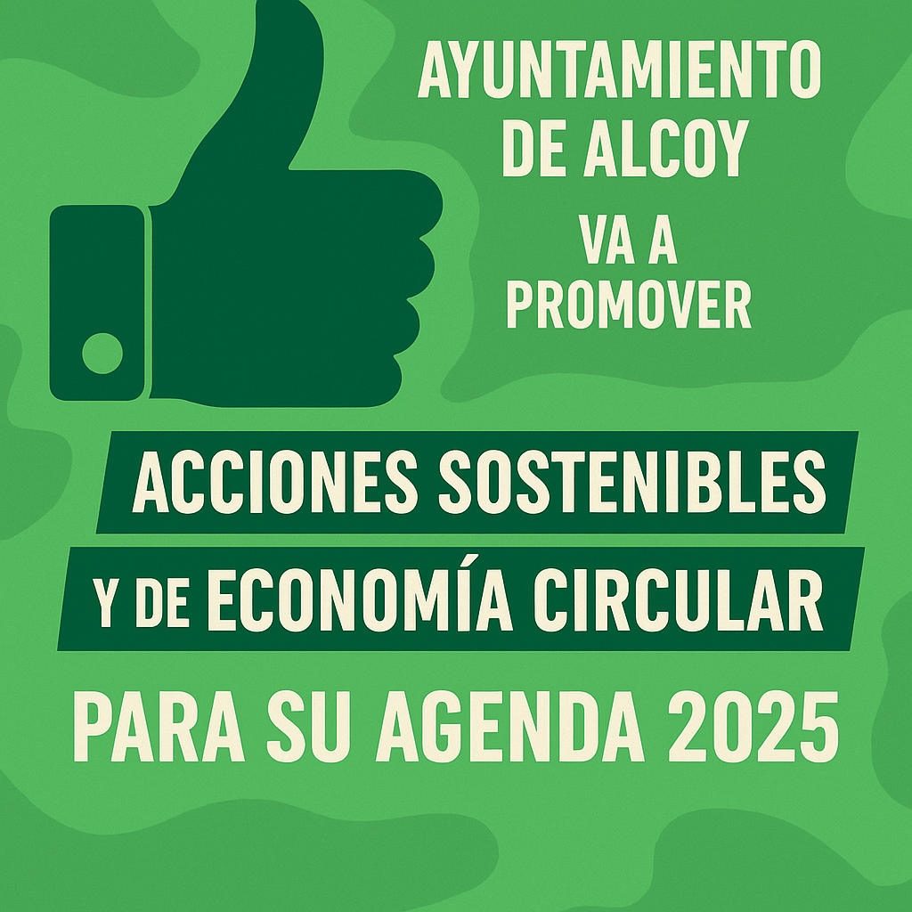

Bienvenidos a las Jornadas de Economía Circular 2025
La economía circular es un modelo de producción y consumo que implica compartir, alquilar, reutilizar, reparar, renovar y reciclar materiales y productos existentes todas las veces que sea posible para crear un valor añadido.
En estas jornadas, exploraremos estrategias innovadoras para implementar la economía circular en diferentes sectores industriales, con el objetivo de promover un crecimiento sostenible.
"La economía circular no es una opción, es la única vía hacia un futuro sostenible."
El Ayuntamiento de Alcoy reafirma su compromiso con la sostenibilidad mediante una serie de iniciativas enmarcadas en su Agenda 2025. Estas jornadas suponen un punto de encuentro para impulsar acciones concretas que promuevan la economía circular desde una perspectiva local, participativa y transformadora.
Durante los encuentros, se tratarán temáticas clave que permitirán a ciudadanos, empresas e instituciones adquirir herramientas y conocimientos para adaptarse a un modelo más eficiente, justo y respetuoso con el entorno.
Entre estos temas, encontraremos:
- Estrategias de reducción de residuos y reutilización de recursos.
- Economía circular en los sectores de la moda, el textil y el consumo diario.
- Gestión inteligente de residuos urbanos y domésticos.
- Modelos de negocio circulares y sostenibles.
- Movilidad sostenible y eficiencia energética.
- Educación ambiental y concienciación ciudadana.
- Casos de éxito locales e internacionales en economía circular.
- Espacios de participación ciudadana y debate abierto.
Los participantes podrán asistir a talleres prácticos donde se aprenderán metodologías reales para aplicar los principios de la circularidad en proyectos empresariales y sociales.